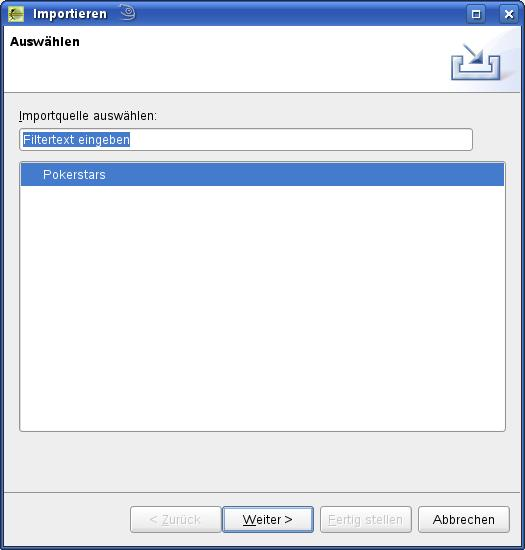
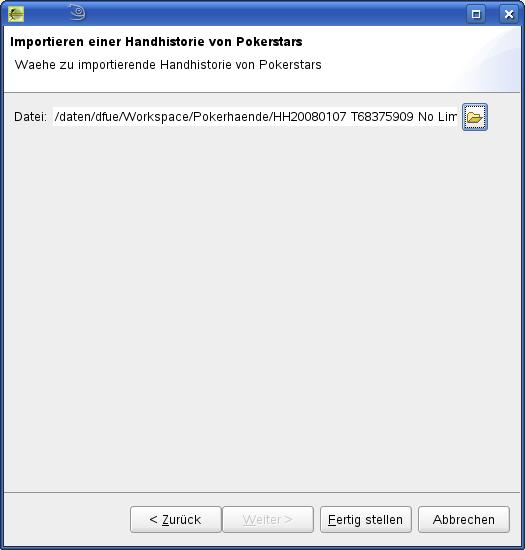
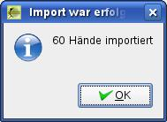

Den Importdialog erreicht man über Datei -> Importieren.
|
 |
Im ersten Schritt wird die Pokerseite gewählt, von der ein Handverlauf importiert werden soll.
Weiter geht es mit Weiter>.
|
 |
Im folgenden Dialog muss die Datei mit dem Handverlauf vorgegeben werden. Über den Button neben dem Eingabefeld wird ein Dateiauswahldialog angezeigt. Die Auswahl der Datei beginnt dabei in dem unter Grundeinstellungen vorgegeben Verzeichnis.
Bit dem Button Fertig stellen beginnt der Import.
|
 |
Nach erfolgreichem Import wird ein Fenster mit der Anzahl der importierten Hände angezeigt.
Mit OK geht es zurück zum Tisch und die erste Hand kann nach gespielt werden.